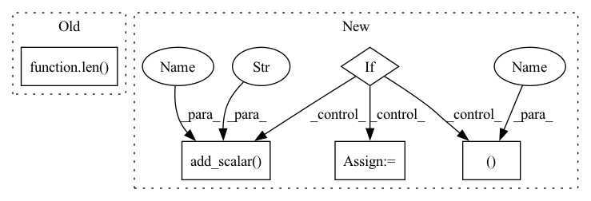

Pattern ID :7787

Before Change
loss.backward()
self.optimizer.step()
pbar.set_postfix(train_loss="{:.3e}".format(loss_total / num))
pbar.update(len(seqs))
print("Train Epoch: {}\tLoss: {:.6f}".format(epoch, loss_total / num))
After Change
running_loss += loss.item()
n_running_loss += n_batch
if n_running_loss >= 100 or num >= n_dataset:
running_loss /= n_running_loss
if self.writer is not None:
self.writer.add_scalar("train/loss", running_loss, (epoch-1) * n_dataset + num)
running_loss, n_running_loss = 0, 0
print("Train Epoch: {}\tLoss: {:.6f}".format(epoch, loss_total / num))
In pattern: SUPERPATTERN
Frequency: 3
Non-data size: 5
Instances
Fragment ID: 27899688
Project Name: mxfold/mxfold2
Commit Name: 691c9d8725c75e514606663ee1b22a90bd3c7330
Time: 2019-10-17
Author: satoken@bio.keio.ac.jp
File Name: dnnfold/train.py
M Class Name: Train
N Class Name: Train
M Method Name: train(2)
N Method Name: train(2)
M Parent Class:
N Parent Class:
M File Name: dnnfold/train.py
N File Name: dnnfold/train.py
M Start Line: 62
M End Line: 71
N Start Line: 60
N End Line: 83
'>
Before Change
if (epoch+1) % 1 == 0:
self.predict_sample()
print("train ner loss: {0}, rel loss: {1}, f1 score: {2}, precission score: {3}".format(loss_ner_total/self.num_sample_total, loss_rel_total/self.num_sample_total,
f1_ner_total/self.num_sample_total*self.config.batch_size, correct_score_total / len(self.train_dataset)))
// pbar.set_description("TRAIN LOSS: {}".format(loss_total/self.num_sample_total))
// neptune 记录代码
After Change
writer.add_scalar("Accuracy/train_rel_ ps", precision_score_final_train, epoch)
if (epoch+1) % 1 == 0:
self.predict_sample()
if (epoch+1) % 1 == 0:
ner_loss_final_eval, rel_loss_final_eval, f1_ner_final_eval, precision_score_final_eval = self.evaluate()
// self.evaluate()
// tensorboard 记录代码
writer.add_scalar("Loss/eval_ner_loss", ner_loss_final_eval, epoch)
writer.add_scalar("Accuracy/eval_rel_loss", rel_loss_final_eval, epoch)
writer.add_scalar("Accuracy/eval_ner_f1", f1_ner_final_eval, epoch)
writer.add_scalar("Accuracy/eval_rel_ps", precision_score_final_eval, epoch)
if epoch > 16 and f1_ner_total > f1_ner_total_best:
'>
Fragment ID: 27899681
Project Name: mangonihao/multiheadjointentityrelationextraction_simple
Commit Name: f3cd70fea333102bb4705e0b92cee42d8a1a6a41
Time: 2021-04-07
Author: 2075419247@qq.com
File Name: mains/trainer.py
M Class Name: Trainer
N Class Name: Trainer
M Method Name: train(1)
N Method Name: train(1)
M Parent Class:
N Parent Class:
M File Name: mains/trainer.py
N File Name: mains/trainer.py
M Start Line: 84
M End Line: 127
N Start Line: 84
N End Line: 138
'>
Before Change
loss.backward()
self.optimizer.step()
pbar.set_postfix(train_loss="{:.3e}".format(loss_total / num))
pbar.update(len(seqs))
print("Train Epoch: {}\tLoss: {:.6f}".format(epoch, loss_total / num))
After Change
running_loss += loss.item()
n_running_loss += n_batch
if n_running_loss >= 100 or num >= n_dataset:
running_loss /= n_running_loss
if self.writer is not None:
self.writer.add_scalar("train/loss", running_loss, (epoch-1) * n_dataset + num)
running_loss, n_running_loss = 0, 0
print("Train Epoch: {}\tLoss: {:.6f}".format(epoch, loss_total / num))
'>
Fragment ID: 27899683
Project Name: keio-bioinformatics/mxfold2
Commit Name: 691c9d8725c75e514606663ee1b22a90bd3c7330
Time: 2019-10-17
Author: satoken@bio.keio.ac.jp
File Name: dnnfold/train.py
M Class Name: Train
N Class Name: Train
M Method Name: train(2)
N Method Name: train(2)
M Parent Class:
N Parent Class:
M File Name: dnnfold/train.py
N File Name: dnnfold/train.py
M Start Line: 62
M End Line: 71
N Start Line: 60
N End Line: 83